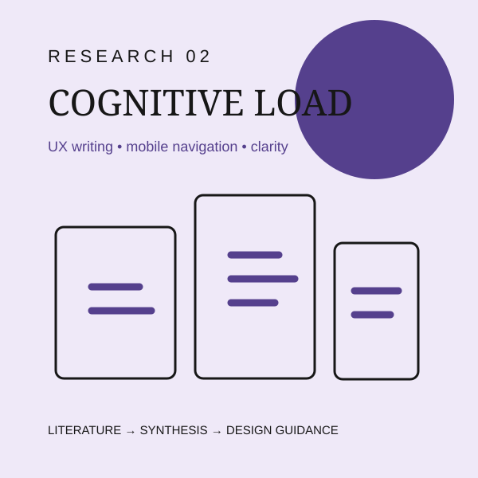
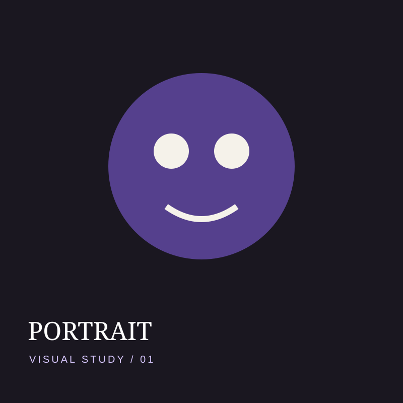
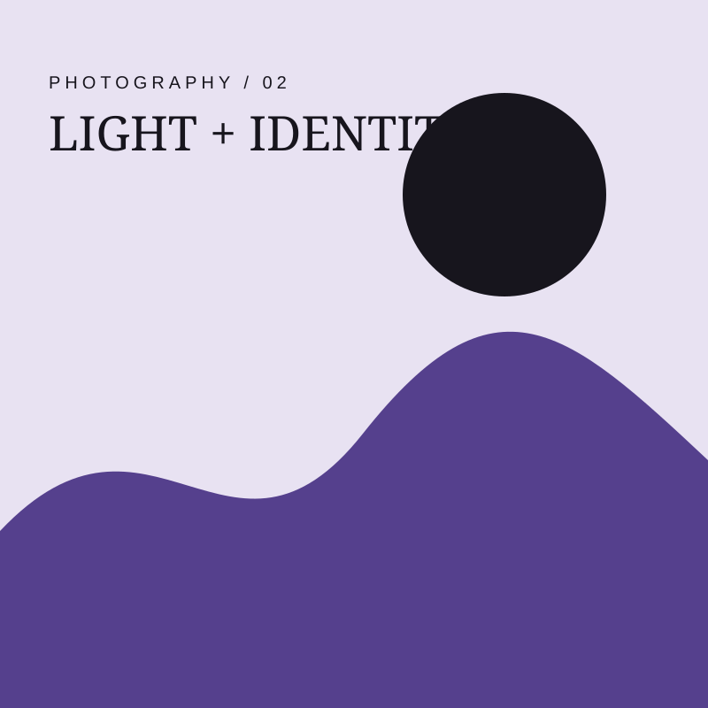
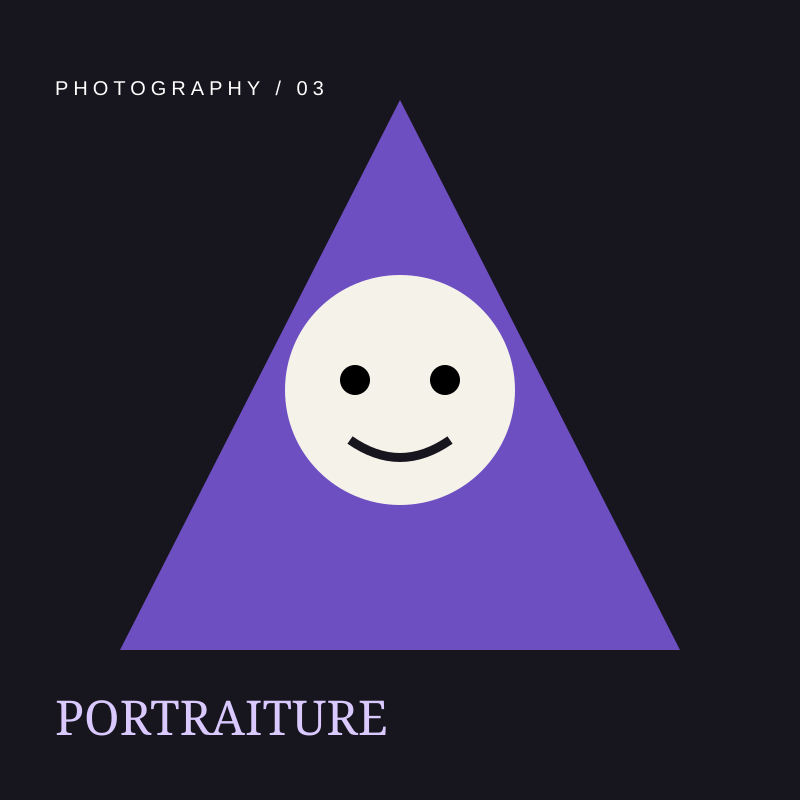
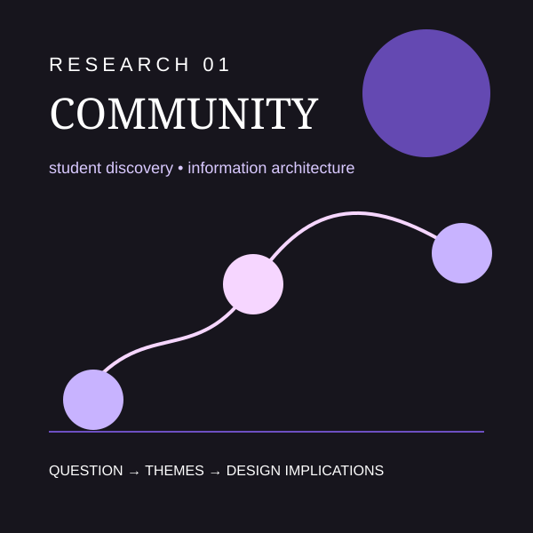

01
AggieSocial
UX / Interaction / Research
↗UI/UX, design research, and visual systems grounded in Cognitive Science.
I'm a UC Davis undergraduate studying Cognitive Science and Design. My work explores how people interact with technology, information, and visual systems. I'm especially interested in UX research, cognitive load, information architecture, UX writing, and inclusive digital experiences.
I'm also the founder and president of AggieBats, a student organization at UC Davis. Through AggieBats, I've learned how design can be used to build community, create belonging, and give people a space to be themselves.
Identify what needs to be understood.
Interviews, literature, observation.
Themes, affinity mapping, insights.
Problem statement and opportunity.
Flows, wireframes, prototypes.
Feedback, iteration, reflection.
UX / Interaction / Research
↗
Academic Research
↗Brand Identity / Community Design
↗UI / Interaction
↗Portraiture / Visual Storytelling



My interests sit at the intersection of Cognitive Science and Design. I'm particularly interested in how people understand, navigate, and interact with digital interfaces, and how research on cognition and learning can inform more accessible and understandable technology.

Research Question: How do students discover organizations and decide whether to join them?
Potential methods: Interviews + survey | Design focus: Information architecture + filtering
Research Question: How does UX writing influence cognitive load during mobile app navigation?
Method: Literature review | Design focus: Clearer microcopy + navigation